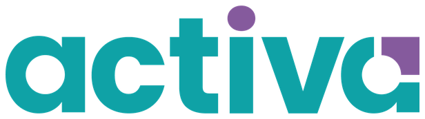

Proyecto Piloto
Prueben el programa completo con un grupo real de su colegio. Al final, ustedes deciden con evidencia propia.
Sin costo
Equipos, licencias, capacitación y acompañamiento incluidos, de principio a fin.
Al final, ustedes deciden con evidencia propia.
Seis pasos, siete semanas
Una semana de preparación, cuatro de clase, una de evaluación y una de cierre.
Registro
Reunión inicial
Preparación
Ejecución
Evaluación
Cierre
El colegio acomoda cada hito dentro de su propia semana.
Tres decisiones y dos datos
Todo lo que pide el formulario, y por qué se pide.
El grupo
El docente
El proyecto
Cuántos son
A dónde se envían
Sin el formulario no se agenda la reunión inicial: es el que dispara todo lo demás.
Una sesión y el plan queda aprobado
Antes de que llegue un solo equipo al colegio.
Dirección o coordinación
El docente elegido
El coach de activa
- Se confirma lo registradoEl grupo y su número de alumnos, el docente responsable y el proyecto elegido
- Se aprueba el plan de proyectoEn conjunto entre la coordinación del colegio y el coach: cómo embona con el plan de estudios y qué van a entregar los alumnos
- Se agendan todas las fechasLa capacitación, la entrega de equipos, el día y la hora de la sesión semanal con el coach, y la reunión de entrega de resultados
El piloto se adapta a su ciclo escolar, no al revés.
La semana previa al aula
Se capacita al docente y llegan los equipos. Todo a cargo de activa.
Capacitación del docente
Entrega de equipos y cuentas
- Los Chromebooks llegan al plantelUno por alumno del grupo y uno para el docente
- Se crean y se prueban las cuentasInstitucionales: una para cada estudiante y una para el docente
- Se activan las licenciasWorkspace para Educación, la licencia de seguridad y Canva para Educación
Al terminar la semana, el grupo puede empezar el primer día de clase.
Cuatro semanas en el aula
En el salón donde ya trabajan y dentro de su horario normal. No se mueve nada del ciclo escolar.
Las fechas de cada actividad se acuerdan con la coordinación dentro de cada semana.
La semana 5 se mide el pilotaje
Lo que se evalúa es cómo funcionó el piloto, con los datos que el propio grupo generó.
Participación de los estudiantes
Adopción del docente
Producto final de los alumnos
Al terminar la semana, los resultados quedan levantados y ordenados.
Se entregan los resultados y ustedes deciden
La última semana del piloto. Tres cosas ocurren, y ninguna depende de que continúen.
Reunión de entrega
Reporte por escrito
Recolección de equipos
Los datos son del colegio, y el reporte también.
El trato completo
- Chromebooks para todo el grupo y su docenteEn préstamo, entre 15 y 30 equipos según el salón, con entrega y recolección incluidas
- Cuentas institucionalesPara el docente y para cada estudiante
- Licencia educativa de Google WorkspaceMás la licencia de seguridad
- Canva para EducaciónLa suite de diseño completa para el grupo
- Capacitación inicial del docente2 horas con coach certificado
- Acompañamiento semanal con coach1 hora por semana durante las cuatro semanas de aula
- El plan de proyecto6 opciones a elegir y el plan aprobado con la coordinación
- Medición y reporte finalLos datos con los que ustedes van a decidir
- Un grupo y un docenteLa sección que ustedes elijan
- Aproximadamente 6 horas del docente2 de capacitación y 4 sesiones semanales con el coach
- Cuatro semanas de calendarioDentro de su ciclo, sin mover nada
- El salón donde ya trabajanMás un lugar para resguardar y cargar los equipos
- Un interlocutorDirección o coordinación, para la reunión inicial y la de resultados
Equipos, licencias, capacitación y acompañamiento: sin costo para el colegio.
Dichas de frente
Tres del préstamo de equipos y tres del acuerdo. No hay más.
Los equipos permanecen en el colegio
Al cierre, activa los recoge
Los equipos están asegurados
Sin contrato, sin anticipo y sin permanencia
Un solo grupo y un solo docente
Cuatro semanas de aula, que no se extienden
Si algo no está aquí, no forma parte del trato.
Al cerrar el piloto, ustedes tienen datos propios
La evaluación del pilotaje
Estadísticas del piloto
- Participación de los estudiantes
- Adopción y uso real de las herramientas por el docente
- Producto final entregado por los alumnos
Reunión y reporte por escrito
Les pedimos cuatro semanas para que lo comprueben con sus propios alumnos.
En la reunión inicial se acuerdan las fechas. El proceso es el mismo en todos los colegios.